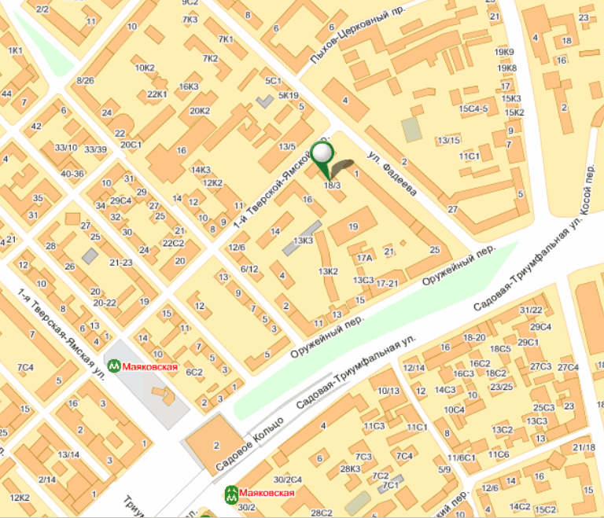

Обратная связь
| ООО Фирма «РОСКОН» |
| 125047. Город Москва, |
| 1 – й Тверской – Ямской переулок, дом 18/3. |
| Телефон: 7 (499) 978 – 34 – 43 |
| Факс: 250 – 0688 |
| Отдел сбыта - 7 (495) 250 - 26 - 35 и 7 (495) 988 - 49 - 46 |
|
 Тверской-Ямской 1-й переулок, 18/3 — Яндекс.Карты |
| Склад в Московской области. |
| Московская область, Ногинск – 2, |
| Деревня Жилино – Горки. |
| Телефон: 8(496 51)5 – 76 – 12 |